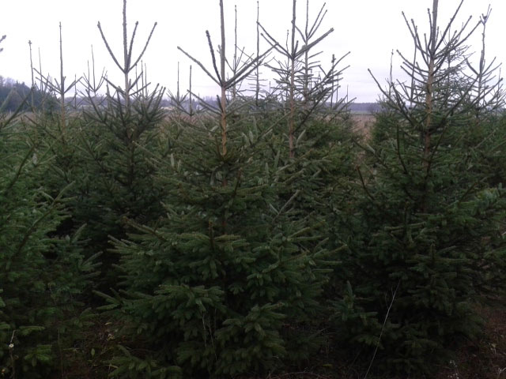
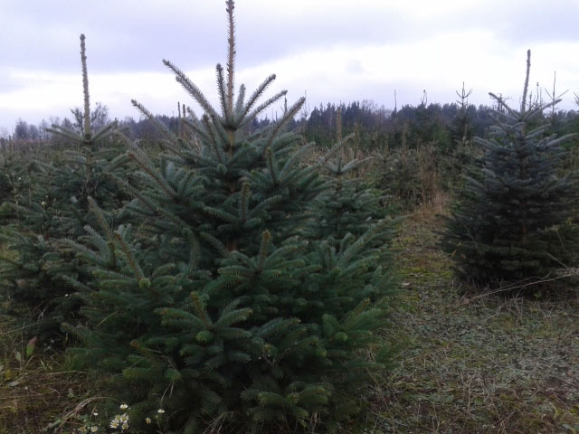
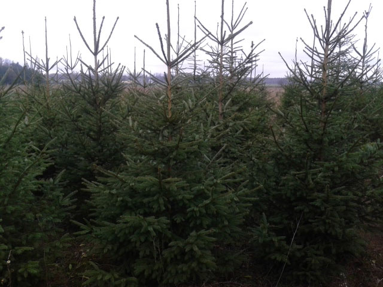
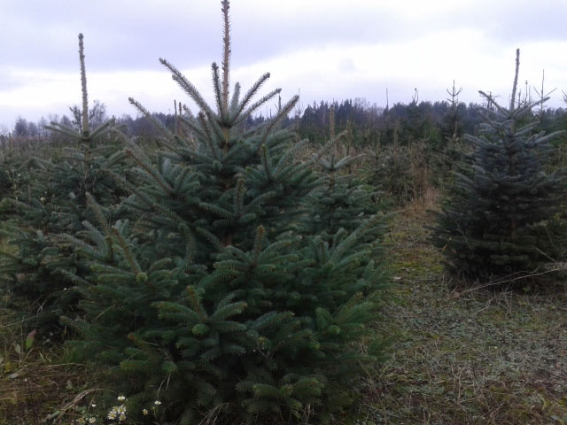

Na terenie naszego gospodarstwa posiadamy również produkcję drzewek iglastych. Hodujemy drzewka od nasion, dbając o ich zdrowie. Zdajemy sobie sprawę z tego, że nasi klienci poszukują okazów nie tylko zdrowych ale również o nienagannej jakości: prostych, gęstych, o równomiernie rozłożonych gałęziach. Na naszej plantacji możecie Państwo w dowolnej porze roku wybrać i zaznaczyć sobie choinkę. Na życzenie klienta kopiemy i usadzamy drzewka w donicy jest też możliwość rodzinnego wycinania choinki z dziećmi i wnukami.
Oferujemy:
Świerk pospolity
Świerk kłujący (srebrny)
 


